DiOPAL
Dual-wavelength Optogenetic Programmable Array of LEDs
Last updated 28 September 2026
Purpose
DiOPAL is a testing apparatus, not part of the bioreactor control loop. It exists to answer one biological question. How does the wavelength and intensity of applied light affect protectant development in engineered Bacillus subtilis 168?
The strain carries a CcaS/CcaR light-responsive expression system. Green light induces protectant production and red light halts it. To characterize that switch we need to expose cultures to defined wavelengths at defined intensities, repeatably, with nothing else varying. DiOPAL is the fixture that makes that possible.
The array is a 4 × 6 grid built around two wavelengths and three intensity levels. Each of the three tiers has a green channel and a red channel, and each channel is four internal-resistance-matched LEDs. One run therefore compares low, medium and high intensity at both wavelengths at the same time, under identical external conditions, which is the only way the comparison is fair.
Intensity is set by pulse-width modulation from an Arduino through a MOSFET, and each tier is held constant for the whole of a test. DiOPAL applies a fixed dose rather than adjusting output as it goes. It characterizes, it does not control.
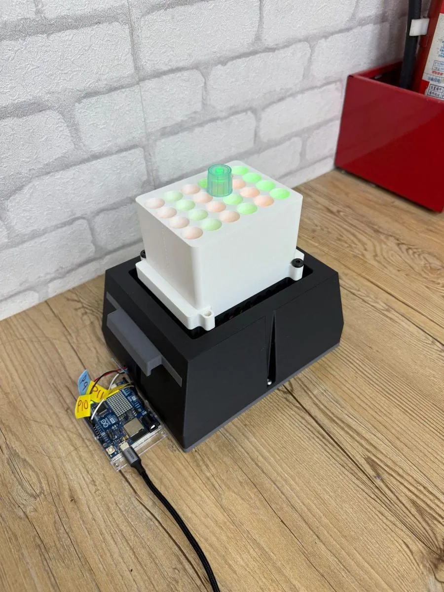
DBTL Cycle 1: Dual-Wavelength Array
3.1 Design
The first build tests the simplest version of the idea. Put a green and a red LED in each column so we can switch between them quickly and exercise the on and off control of protectant production directly. Nothing is calibrated at this stage, because the question is whether the concept works at all before we spend effort making it precise.
Wire-management prints were included from the start, since even at this size the harness gets unmanageable fast.
3.2 Build
The team still has to add construction photos, the board layout, and how the LEDs were wired and driven at this stage.
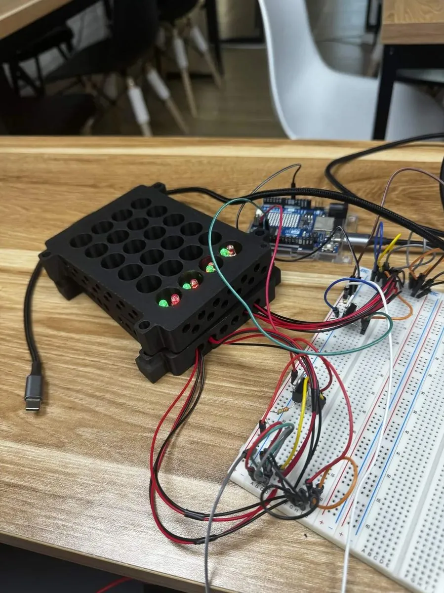
3.3 Test
To be written: what was run on iteration 1 and what came out of it.
3.4 Learn
The dual-wavelength concept worked, but two things were not controlled and both matter more than they first appear.
Output consistency between LEDs was not controlled. Internal-resistance variance is a common problem in cheap single-bulb LEDs. Nominally identical parts draw different currents and emit different intensities at the same drive level. As long as that is true, an intensity tier is not a real quantity and the wavelength comparison is not fair either, since the green and red channels would be running at unknown relative brightness.
External light was not blocked. Ambient light adds an unknown amount of illumination to every tube, and it lands hardest on the low-intensity condition, which is exactly where we need the cleanest separation.
Both have to be solved before intensity means anything, which is what cycle 2 is for.
DBTL Cycle 2: Matched Output and Light Shielding
4.1 Design
Cycle 2 introduces the three-intensity structure that defines the array, and the LED matching needed to make it real.
The approach is to measure the lumen output of every LED individually and use that to identify units with similar internal resistance. From the matched units we form three groups of four per wavelength, one group per intensity tier, arranged as columns. Because the LEDs within a column are matched, the column can be recalibrated as a unit through straightforward mathematical adjustment, so that every column at a given tier matches every other. That is what makes low, medium and high reproducible quantities rather than labels.
Coverage was added to block external light, so that the intensity a culture receives is the intensity we set.
4.2 Build
Every LED was driven at 5 V and measured individually on a lux meter using a printed sensor fixture, so each reading is taken at the same distance and orientation. Each LED carries a tag made of its row and its column, with rows A to D running downward and columns 1 to 5 running across, so any physical LED can be traced back to its own measurement. The array was then rewired with the matched units grouped into columns.
Still to add: the lux meter model and resolution.
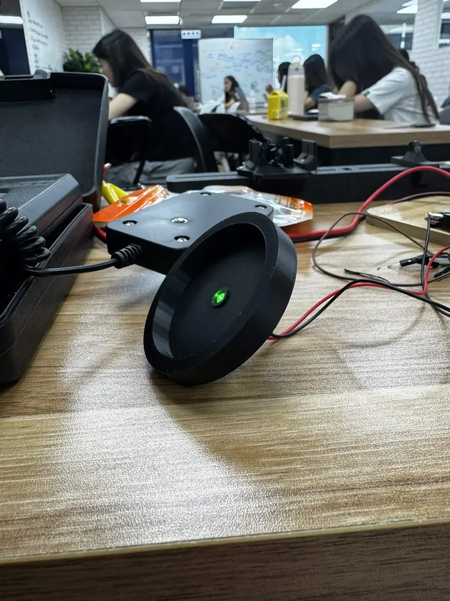
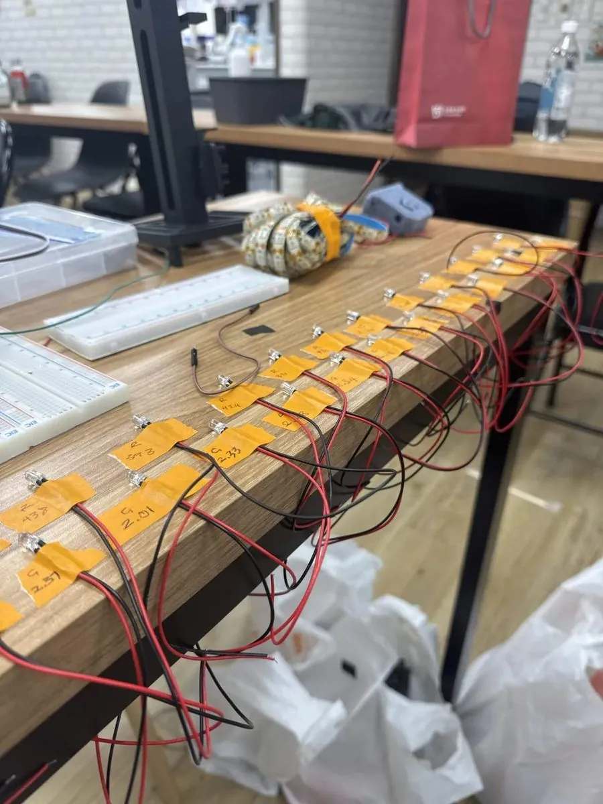
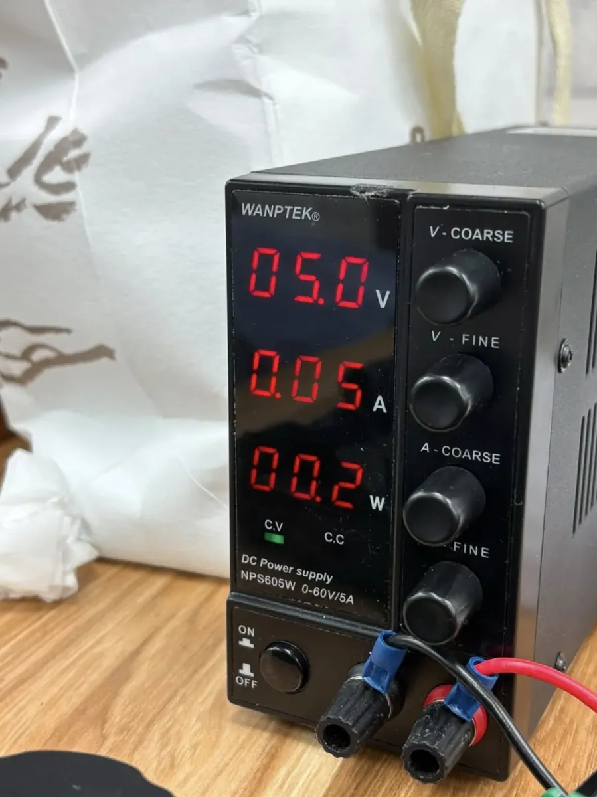
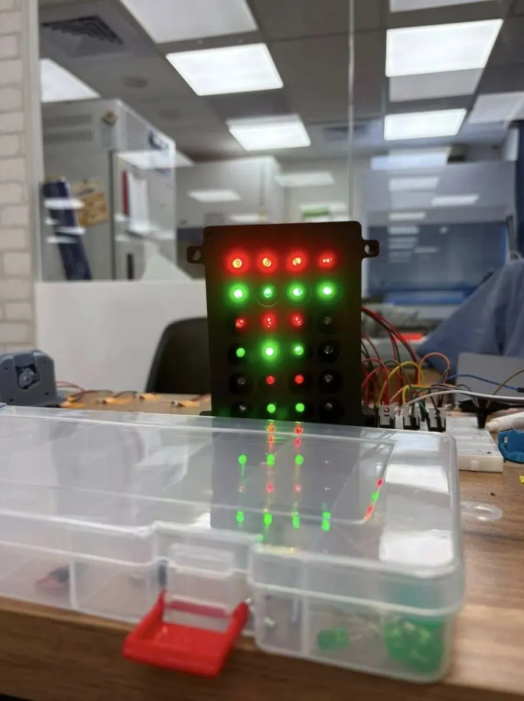
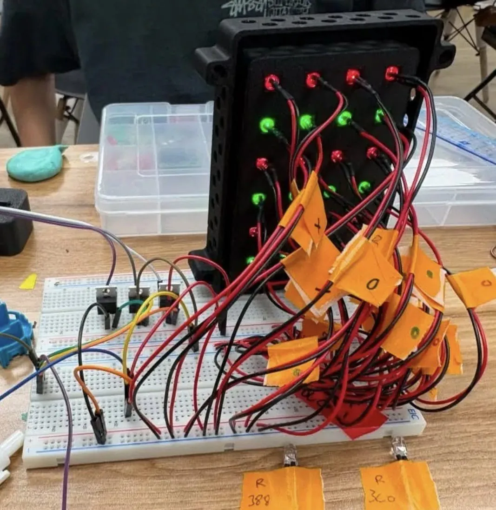
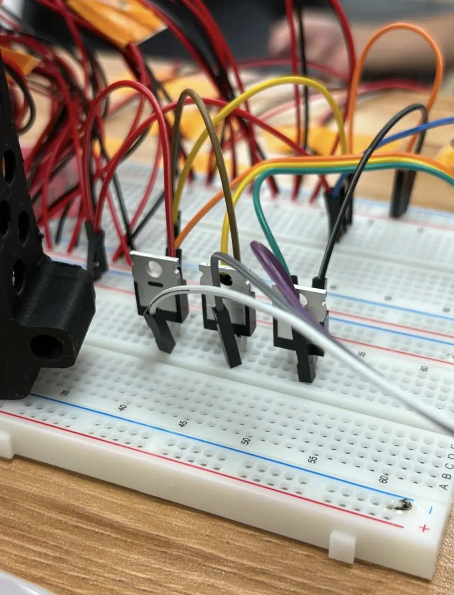
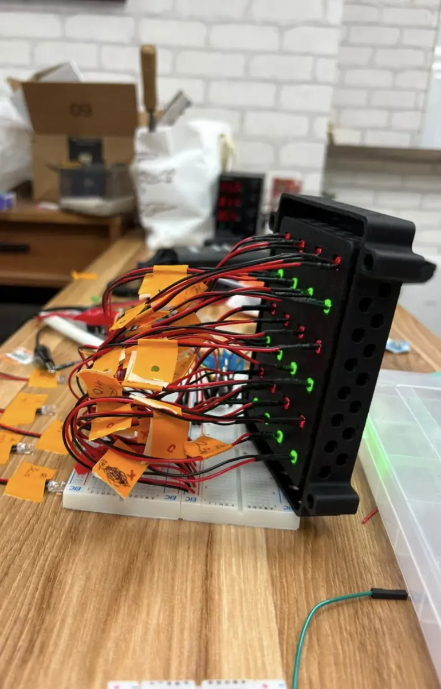
4.3 Test
All 20 green LEDs at 5 V, in kLux.
| 1 | 2 | 3 | 4 | 5 | |
|---|---|---|---|---|---|
| A | 2.54 | 2.19 | 2.33 | 2.40 | 2.40 |
| B | 2.37 | 2.11 | 2.34 | 2.48 | 2.33 |
| C | 2.01 | 2.37 | 2.38 | 2.42 | 2.36 |
| D | 2.33 | 2.05 | 2.35 | 2.45 | 2.20 |
All 20 red LEDs at 5 V, in lux.
| 1 | 2 | 3 | 4 | 5 | |
|---|---|---|---|---|---|
| A | 431 | 371 | 424 | 393 | 438 |
| B | 400 | 380 | 430 | 397 | 360 |
| C | 410 | 410 | 360 | 416 | 397 |
| D | 411 | 390 | 360 | 388 | 428 |
Sorting those into groups of four by output gives the matched sets. Green, in kLux.
- 2.33, 2.33, 2.33, 2.34
- 2.35, 2.36, 2.37, 2.37
- 2.38, 2.50, 2.50, 2.42
Red, in kLux.
- 0.390, 0.393, 0.397, 0.397
- 0.410, 0.410, 0.411, 0.416
- 0.424, 0.428, 0.430, 0.431
After rewiring, the six channels read as follows, in kLux.
| Green low | Red low | Green mid | Red mid | Green high | Red high |
|---|---|---|---|---|---|
| 2.33 | 0.390 | 2.35 | 0.410 | 2.38 | 0.424 |
| 2.33 | 0.393 | 2.36 | 0.410 | 2.50 | 0.428 |
| 2.33 | 0.397 | 2.37 | 0.411 | 2.50 | 0.430 |
| 2.34 | 0.397 | 2.37 | 0.416 | 2.42 | 0.431 |
4.4 Learn
The variance is real and it is large. The green LEDs ran from 2.01 to 2.54 kLux, a spread of 26% across parts sold as identical. The red LEDs ran from 360 to 438 lux, a spread of 22%. Building intensity tiers out of unsorted LEDs would have meant every column sitting at an unknown brightness, so the matching step is not optional.
Sorting by measured output tightens each group considerably. The green low group holds 2.33 to 2.34 and the green mid group holds 2.35 to 2.37, which is well inside 1%. The red groups hold to about 2% each.
Two things did not come out clean and both need addressing before this data supports an intensity claim.
- The green high group spans 2.38 to 2.50, roughly 5%, which is five times looser than the other two green groups. It is the leftover group, made of what did not match anything else.
- The separation between tiers is smaller than we need. Green low to green high is about 7% and red low to red high is about 10%. That is the natural spread of the parts, sorted, rather than three distinct light levels.
The tiers therefore have to come from the PWM duty cycle rather than from LED selection. Matching makes the four LEDs in a column agree with each other, and software sets how bright that column runs. That is what cycle 3 builds.
What remained after this cycle was also practical. The electronics were still exposed, intensity was still set by hand, and there was no dedicated way to hold the test tubes in a repeatable position under the array.
DBTL Cycle 3: Enclosed and Software-Controlled Instrument
5.1 Design
Cycle 3 keeps the calibrated tiers and the light shielding from cycle 2 and turns the array into something that can be handed to someone else and used. Four changes do that.
- An outer frame print houses the wiring and the Arduino, so the electronics are enclosed rather than sitting loose on the bench
- Light intensity is varied in code, so a run is defined by a set of values rather than by a physical adjustment someone has to remember
- Slider prints allow assembly and disassembly without tools
- A tall print holds the test tubes at a fixed position under the array, so the distance between LED and culture is the same every run
5.2 Build
Control runs from an Arduino Uno R4 WiFi. PWM signals from the Arduino drive a MOSFET for each LED group, and software sets the duty cycle for each intensity tier. The selected intensities are held constant for the duration of a test so each culture receives a fixed, well-defined dose. Three calibrated tiers across two wavelengths give six defined light conditions per run.
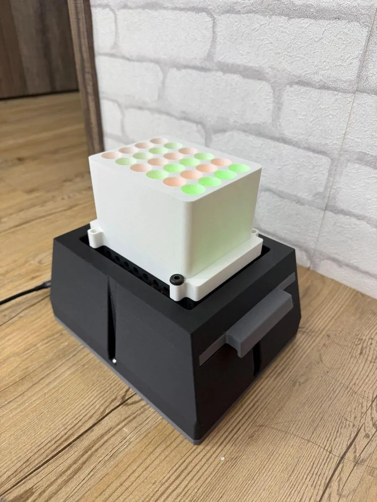
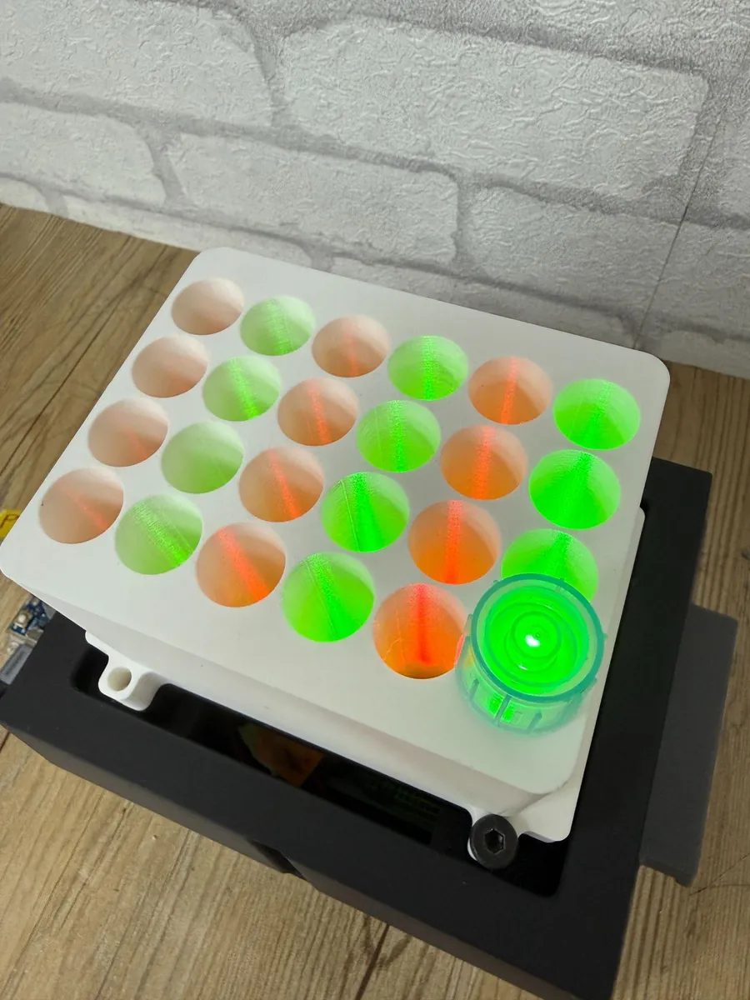
5.3 Test
In progress.
5.4 Learn
In progress.
Drag to compare any two builds in the same frame and at the same scale.
Final Design
6.1 Final CAD and Prototype Photo
The final CAD is the 3D model at the top of this page; the prototype photos are in 5.2.
6.2 Key Specifications
- Array layout of 4 × 6, being 2 wavelengths × 3 intensity tiers, with 4 matched LEDs per column
- Green channel around 535 nm, which induces protectant expression confirm
- Red channel around 670 nm, which halts it confirm
- Three intensity tiers, resistance-matched and mathematically recalibrated to match across columns
- Control by Arduino PWM through a MOSFET, held constant for the duration of a test
- External-light coverage isolating the cultures from ambient light
- Enclosed frame for wiring and Arduino, with slider prints for tool-free assembly
- Tall print sized to hold test tubes at a fixed distance from the array
6.3 Limitations
DiOPAL applies a fixed dose and does not respond to the culture, so it cannot be used to close a control loop. That is deliberate, but it means nothing here transfers directly to the bioreactor without a feedback path being added.
The wavelengths are currently taken as the classic CcaS/CcaR values rather than measured on our own parts, so the stated peaks are assumptions until the LEDs are characterized.
Matching corrects for spread between LEDs at build time. It does not correct for drift as the LEDs age or warm up during a long run.
Proof of Concept
The purpose of this section is to show a culture run completed end to end under DiOPAL, without yet claiming any relationship between intensity and production rate. That relationship is the subject of section 8.
In progress: 7.1 Demonstrated Culture Run, 7.2 Flow Conditions, 7.3 Temperature and Pressure, 7.4 Starting and Final OD.
Level 2 Test: Intensity Variability
This is the test DiOPAL was built for. Holding wavelength fixed and varying intensity across the three calibrated tiers, does protectant production change with the intensity applied?
In progress: 8.1 Temperature, 8.2 Graphs, 8.3 Data Analysis, 8.4 Learnings, 8.5 Limitations.
Reproduction
9.1 Materials List
Full costing is kept in the LPA cost sheet, which feeds the cost analysis in the business plan.
| Component | Part number / spec | Qty | Unit | Total | Supplier |
|---|---|---|---|---|---|
| Green LED | , peak nm, FWHM nm, Vf V, If mA, viewing angle ° | 12 | |||
| Red LED | , peak nm, FWHM nm, Vf V, If mA, viewing angle ° | 12 | |||
| Microcontroller | Arduino Uno R4 WiFi | 1 | |||
| Perf board | 1 | ||||
| Power supply | , 5 V, A | 1 | |||
| Hook-up wire | AWG | ||||
| Solder | |||||
| Heat-set inserts | , M × mm | ||||
| Screws | , M × mm | ||||
| Filament, PLA | Bambu Lab PLA Basic, 1.75 mm, 1 kg spool | 1 | 355.99 | ||
| Total | TWD | ||||
Printed parts
| Part | Material | Filament | Infill |
|---|---|---|---|
| LPA_Box | Black PLA | g | |
| Bottom_Plate | Grey PLA | g | |
| Tube_Holder | White PLA | g | |
| LED_Holder | Black PLA | g | |
| Left_C | Grey PLA | g | |
| Right_C | Grey PLA | g |
Equipment
Lux meter, 3D printer, soldering iron, calipers, and the printed sensor fixture used for LED matching.
9.2 Assembly Guide
In progress.
9.3 Downloadable Blueprints
- LPA_Box: housing.stl
- Bottom_Plate: base-plate.stl
- Tube_Holder: tube-holder.stl
- LED_Holder: led-holder.stl
- Left_C: left-c.stl
- Right_C: right-c.stl
The STLs the 3D walkthrough is built from, matched to the part names in the printed parts table. Dimensioned drawings, component drawings and print settings per part are still to come.
Prior work, and what is ours
DiOPAL is not a new idea. Illuminating a plate of cultures from below with
per‑well control is the Light Plate Apparatus pattern from the optogenetics
literature, and our printed enclosure still carries LPA_Box as its part
name because that is where the design started. What we built on top of it is the
dual‑wavelength column layout, the resistance‑matched LED selection, and
the enclosure and tube holder that fit our tubes and our incubator.
The biology is the CcaS/CcaR green/red switch, also from the literature, not designed here. Our dose target comes from the Castillo‑Hair characterisation of that system, whose half‑maximal point is 4.66 µmol m⁻² s⁻¹, the number we are trying to bracket with the three tiers.